Weekly Schedule · Assignment 1: Logo Re-design
STUDENT LOGOS
Image not in the export: 2024Logos.jpg
Assignment 1 - Part 1
30% Logo Redesign
There are two parts to Assignment 1 - Part 1 and Part 2.
THIS IS PART 1.
At the end of part 1, you will be presenting and submitting 2 final digital options on week 7.
At the end of part 2, you will be submitting a digital version of the ONE concept chosen for the final option. With this option, we will be moving forward for the rest of the semester. Part 2 is separate from Part 1.
OVERVIEW
- Selecting the worst logo in your professional opinion.
- A small business that is located in Canada.
- It cannot be a national corporation or a well-known industry or business or a sports team - hi-tech or pharmaceutical etc.
OBJECTIVES
- To demonstrate your ability to think creatively and with ODRIGINAL concepts.
- To demonstrate your ability to take marking research and develop a creative concept that meets the needs of the client presently and in the future.
- To demonstrate your knowledge and ability to work through the stages of creating a logo redesign.
- To demonstrate your ability to create a logo that can be used within any medium and size.
- To demonstrate your ability to create a logo within the 2 or 3 colour parameters.
ASSIGNMENT SPECIFICATIONS
1) TWO logo options - each option should have as follows:
a) Colour Logo - 2 Pantone solid colours (no tonal value or gradations- all solid colour), full size.
b) Black an white - 100%K Black logo - (no tonal value or gradations - all solid colour), full size.
c) Reverse version of the logo on solid black background. Must also work on any solid colour background.
Because Adobe has suspended the use of Pantone Solid Colour Swatches we will have to convert CMYK colours to Solid Spot Colours as discussed in class.
MAKE SURE THAT YOU RENAME THE NEW SPOT COLOUR - PANTONE ###C.
Here is a step by step way to select the colours and convert to SPOT COLOURS. Your final file should not have any CMYK break to it at all in the colours that you are selecting.
Open a new page in Illustrator - 8.5x11 - and make sure that the Document Colour Mode is set at CMYK.
Image not in the export: OpenPage.jpg
Create your colours using CMYK colours. You will then convert the CMYK colour to SPOT COLOUR
You will rename the spot colours with a Pantone Solid Coated code which you will access here:
https://vector-conversions.com/vector/pantone_color_swatchbook.pdf
Choose your colours as discussed in class from this catalogue. Take a screen shot of the colour, bring image into illustrator and eyedrop the colour to a blank box. Then you will convert this CMYK colour to a spot colour as demonstrated in class and rename the corresponding Pantone C #
Image not in the export: pic0_20231113155639931.jpg
In the box to the top right called Swatches click on three bars to the right and go down to Swatch options and select Spot Colour.
Image not in the export: pic1_20231113155640167.jpg
Image not in the export: pic2_20231113155640459.jpgRename the colour to the Pantone Colour. Image not in the export: pic3_20231113155640834.jpg
Image not in the export: pic4_20231113155641144.jpg
Open up Separations Preview from Window You will now see your new spot colour in the Separations Preview.
Image not in the export: pic5_20231113155641407.jpg
All your black unless otherwise stated will be 100% K - make sure there is no CMY in the black
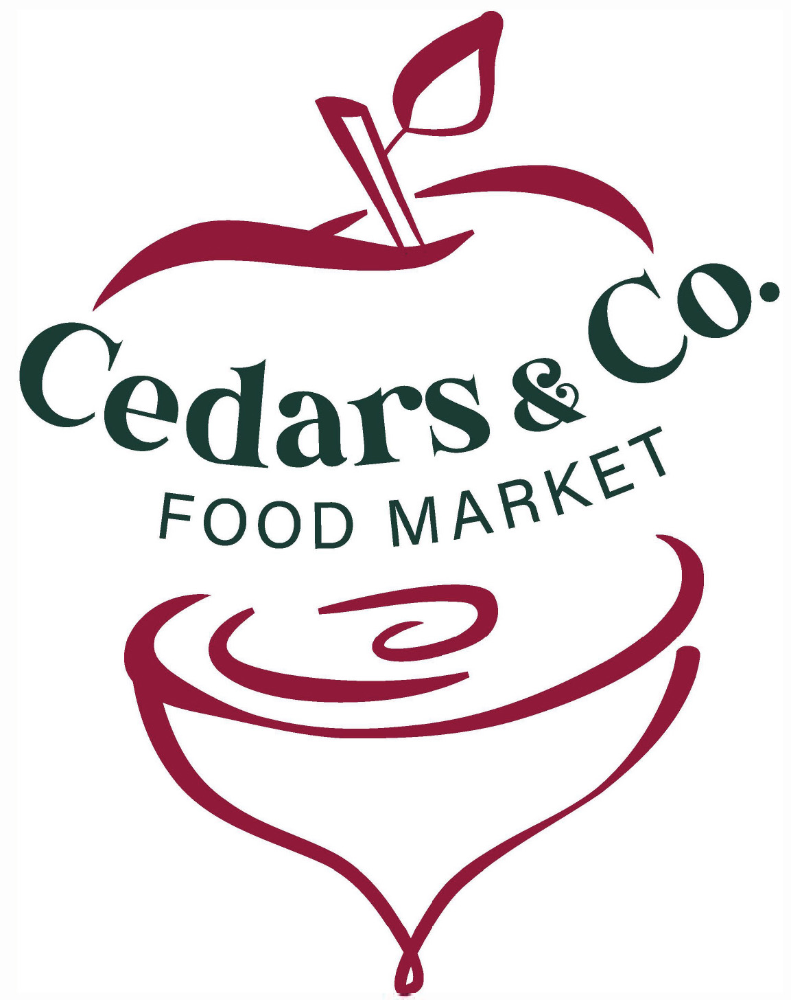
b) BW Logo - no tonal value
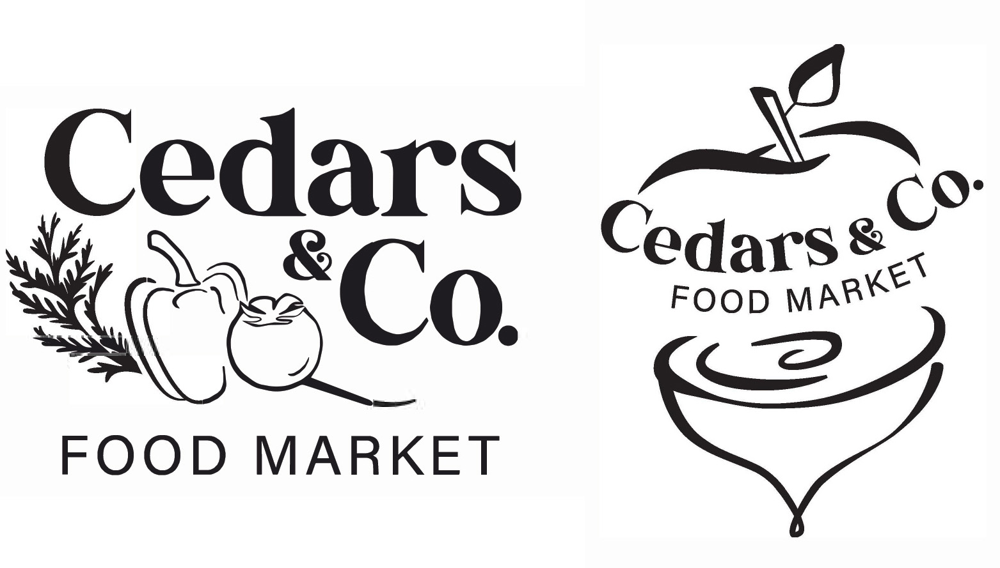
c) Reduced version 1"x1" - Colour and B/W
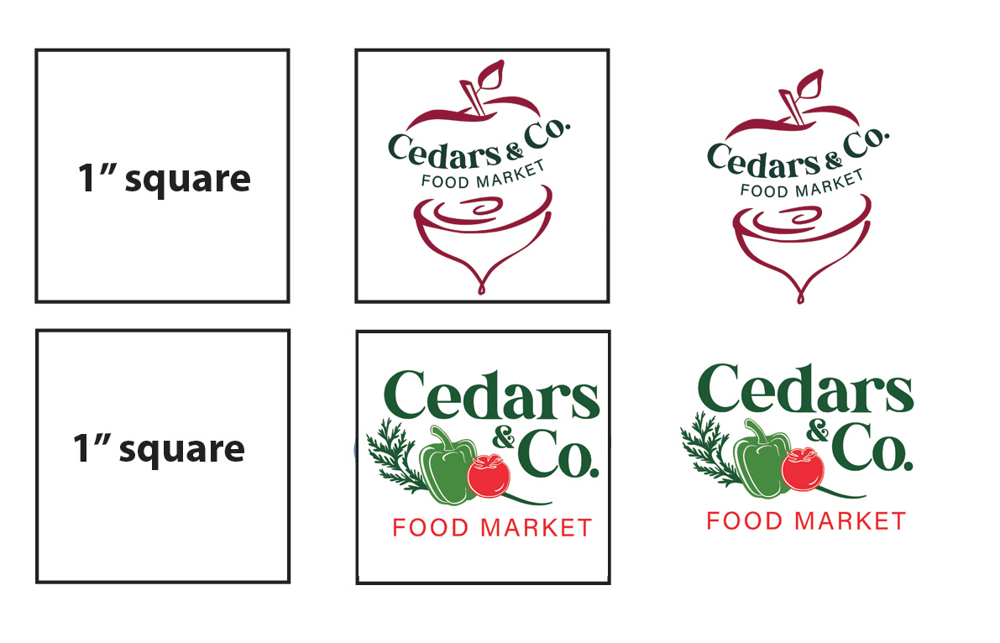 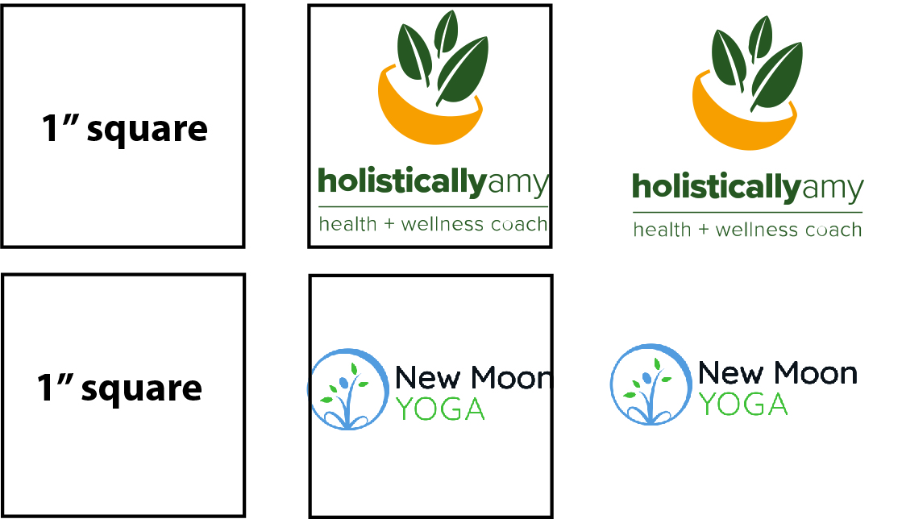
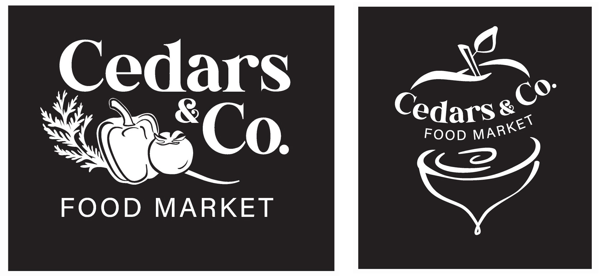
Example on the left shows the reverse logo on black background as per samples. However when the logo is placed on another colour there is a problem as you can see with the black in the teeth. This can not happen. You must build the file so it works as per the image on the right.
NOTE: All your working ai files will be checked after final submissions for accuracy in colour selection to make sure correct Pantone Solid C has been selected and that there is no RGB or CMYK colour in the logo. The white version should have no colour value at all.
CREATIVE PROCESS
After Creative Brief has been completed.
Exploratory process & concept methods (sketching/drawing)
This process will help you with potential directions. At this point, you do not have a particular direction in only direction possibilities. During this time you should explore and allow your creative juices to flow. When you begin sketching empty all your ideas onto paper until there is nothing left. When nothing is left - walk away and engage yourself in another activity, reading material, a different environment with different exposures. This will help you refresh and fill up your think tank. Thumbnail sketches help you discover what to do and what not to do. It's about drawing out tons of rough ideas in order to select a shortlist of strong directions you can move forward with.
Shape association
By analyzing and processing visual information in unique ways through shape association it will help you condition your mind to formulate conceptual ideas.
Style Selection / Personality Selection
Selecting the right style is crucial. Styles have personalities that can repeal or attract certain audiences. Your style choices should reflect the attributes of your creative research.
Sketching Partners - you will be assigned sketching partners to collaborate the process and sketching partners will be in tandem during break out sessions with the Art Director.
DUE DATES
DUE WEEK 2 - Design Brief
This will include:
1) An Introduction page.
2) Shots of their present logo (could be more than one)
3) 1- 22 Creative brief information (include competitor’s logo). Number responses.
4) Mind map
5) Mood board (based on information obtained from your client or from your research).
RESEARCH
Do your research - this initial groundwork will help you gain ideas about the client and its industry. The more research you do the better foundation you have to build your concept.
Creative Brief - Answer these questions:
- Client name - Company name (Contact person's name, phone number and email address. For this project it will the owner. You do not have to find out their name. Make one up.):
- Primary contact:
- Project title:
- Designer name (For this project it will be YOUR name.):
- Start date (For this project it will be the start date of this project. WEEK 1 ):
- Project deadline (For this project use the project deadline. WEEK 7):
- Project objectives (What is the objective of the creative?):
- Company insight(This is information that you would not be able to obtain from internet research.): You will not be able to answers this question, but you should ask your client this.
- Target audience:
a) Primary and secondary target audience / Key market (Industry):
b) Demographic: Is the study of age, gender, income, education level and employment status...etc.
c) Psychographics / IAO (interests.activities.opinions): Is the study of personality, values, attitudes, interests, opinions and lifestyles...etc.
d) Geographics: Their location and where are their clients located? - Deliverables (Tangible or intangible result of the project that is intended to be delivered to a customer. A deliverable could be a brochure, a logo, or a building of an overall project.):
- Customer benefits (What benefit would the customer get by this product or service?.):
- Competition - List of competitors (Primary & Secondary):
- Key message (For this project, it will be a message that the company wants to communicate about their product or service. Example Tide - gets white whiter.Look at is your slogan or tagline.):
- Current/desired perception(How is the client's product or service presently perceived? How does the client want their product or service to be perceived?):
- Strategic focus (Is a marketing strategy in which a company focuses its resources on entering or expanding in a narrow market or industry segment.):
- Tone & manner (Tone & Manner of a brand — a range of nature, values, and personality of the brand):
- Project mandates (The preliminary report to outline the parameters of the project. This allows the client to know in every detail that will be taken during the execution of a project. For this project use your due dates and the think you will complete by that time.):
- What is there a unique selling point of product or service (unique selling point / USP - For this project, it will be something that the product or service brings to the table that their competition does not.):
- What is the emotional benefit (For this project, think about what emotion to they get from the product or service. Example: prestige, increased social status, so confidence.):
- Creative considerations (Limitations, factors or items that must be addressed, things to be taken into consideration when designing. Example you need to use a certain colour or image. The list can go on.):
- Determine from the client where they what to see themselves in the future. What is their strategic plan for the company/product or service?
- What is the objective of your job that you have been hired to do? What action are they trying to achieve? Example: more downloads, increase membership base, Increased traffic, or more sales.
DUE WEEK 3 - 1st round of sketches
Due at the beginning of class. Pencil/pen or tablet sketches (your choice) - Labeled Week 3
30 numbered sketches - as per presentation example
1) Milestones checked.
2) You will discuss designs with your sketch partner.
3) Prof and sketching partners meet as a creative team and we will eliminate the weak.
4) You will begin flushing out your new sketches on paper.
DUE WEEK 4 - 2nd round of sketches
Due at the beginning of class. Pencil/pen or tablet sketches (your choice) - Labeled Week 4
20 numbered sketches If you have 3 then do 30 sketches. Do not look at it as extra work - it's you progressing to be a better designer.
1) Milestones checked.
2) You will discuss designs with your sketch partner.
3) Prof and sketching partners meet as a creative team and we will eliminate the weak.
4) You will begin flushing out your new sketches on paper.
- These sketches are going to be variations of two designs that you feel strongly about.
- No colour or type at this point.
- Once you have nailed down the concept for symbol/graphic then we will discover colour and type solutions.
- You will be marked by showing the progression and development of both of your selected concepts.
DUE WEEK 5 - 4th Final round - digital
Due at the beginning of class
Going digital
- We have chosen which two to move forward with and you will begin building in Illustrator.
- No colour at this point - Black and white only
- Some of you might have the type in place and some may not.
If possible, you should be showing many variations of type choices and positions. - You will be marked by showing the progression and development of both of your selected concepts.
DUE WEEK 6 - 4th Final round - digital and colour
Due at the beginning of class
1) Show your final two distinctly different versions of the logo.
2) Computer-generated images/printouts with type in position. You should be showing many variations of type choices and positions.
3) You should be showing COLOUR variations. Identify Pantone Solid C colours being used
4) You should have a BW, COLOUR and Rev at this stage.
WEEK 7 - PRESENTATIONS
Final Comps for Presentation submission
You will present mockups in a professional manner to the class.
1) Title page with logo and your name and section number with layout and design
2) Sales Pitch outlining how the direction you went in satisfies their objectives for the future. Should reflect product look and feel.
3) First concept - colour - black and white - reverse versions + identify Pantone Colours
4) Second concept - colour - black and white - reverse versions + identify Pantone Colours
5) Time Sheet
CRITERIA
Presentation to the class in a professional manner.
You have to have two distinctive logos to present.
You will be showing both versions in colour, back & white and reverse.
You have to show reductions in both colour and BW (1" width x 1" height).
If you have a third design that you want to present you can do so.
FINAL SUBMISSION FOR BOTH CONCEPTS AFTER PRESENTATION
2PDF FILES AS PER SAMPLE SHOWN HERE - SUBMIT FILES TO Assignment 1 Part 1 - FINAL TWO CONCEPTS

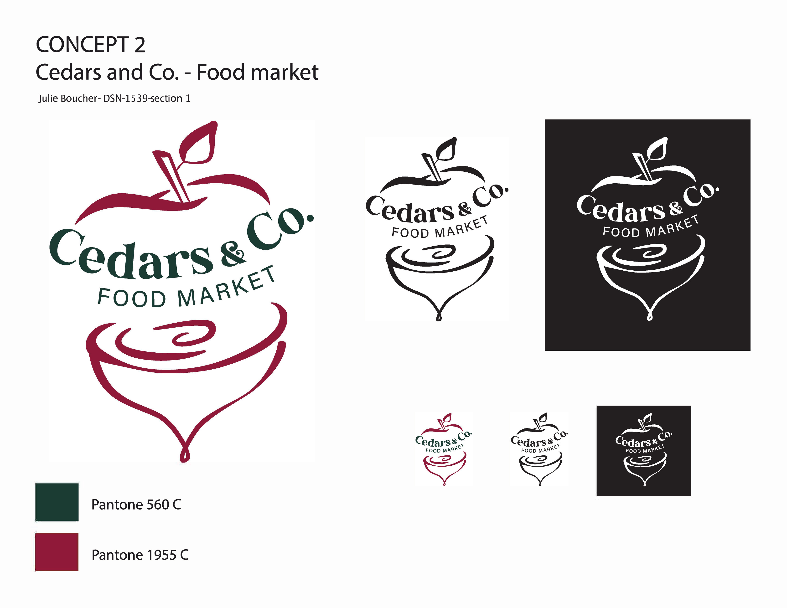
Week 1 -RESEARCH & CREATIVE BRIEF - Due Week 2
Submission folder: LOGO DESIGN - RESEARCH & CREATIVE BRIEF & MOOD BOARD + QUOTE
STUDENT EXAMPLES RESEARCH AND CREATIVE BRIEF
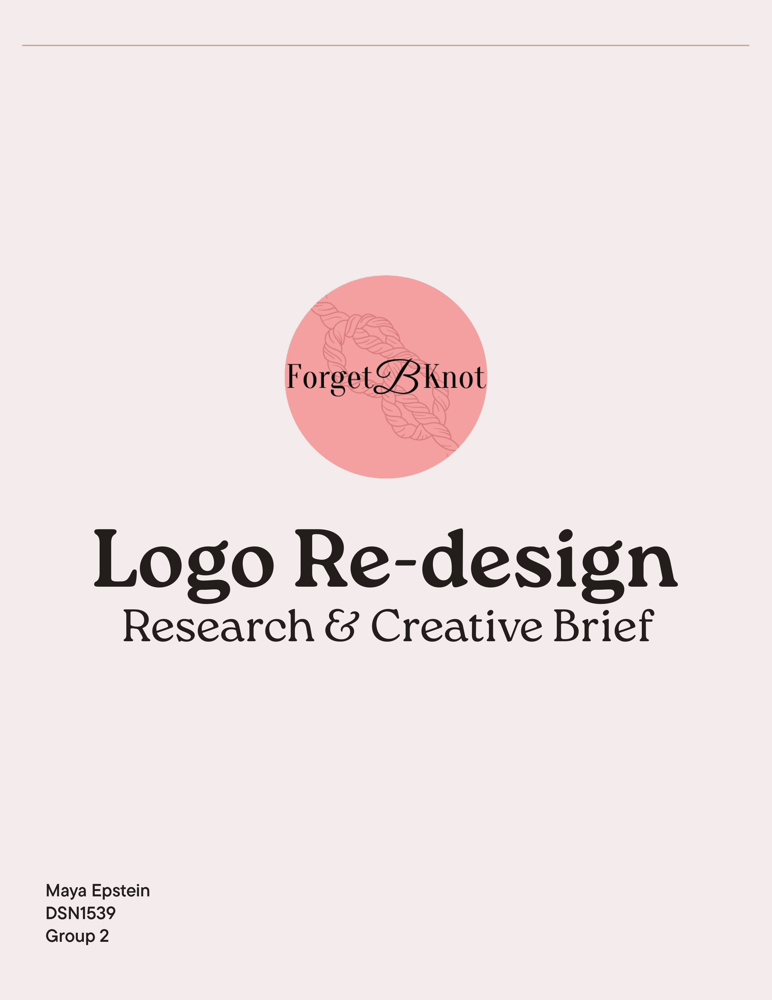
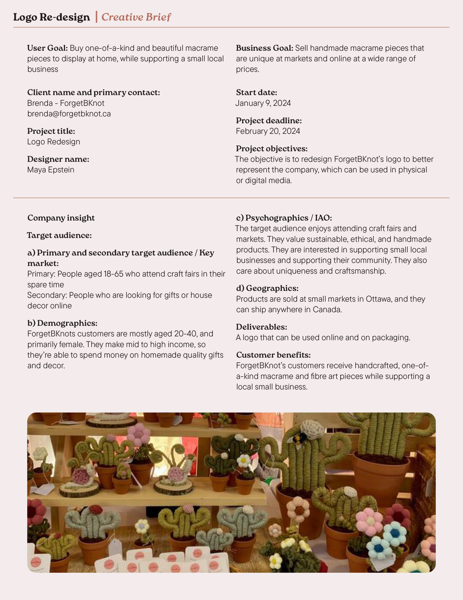
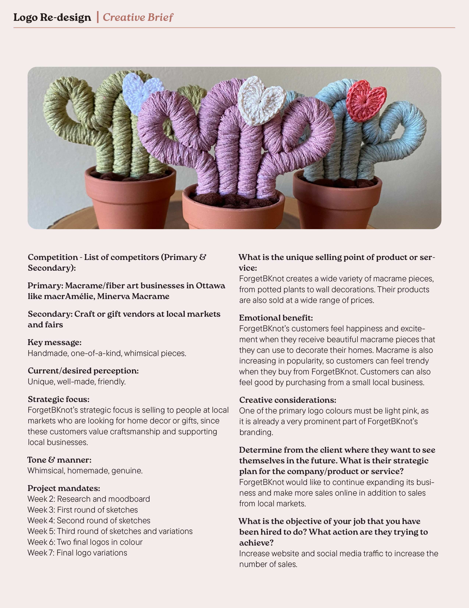
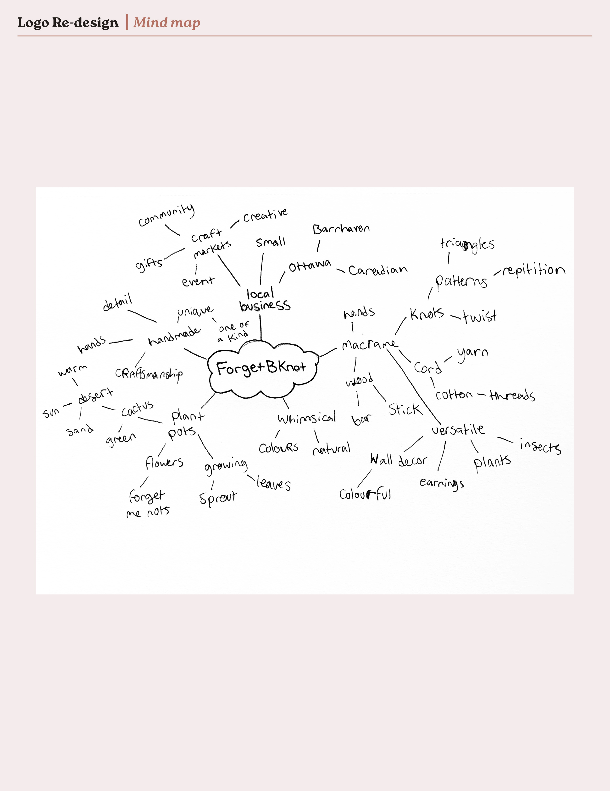
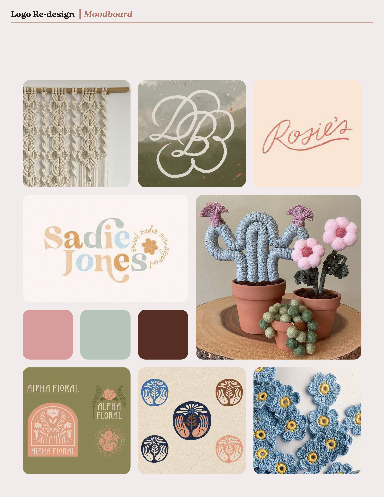
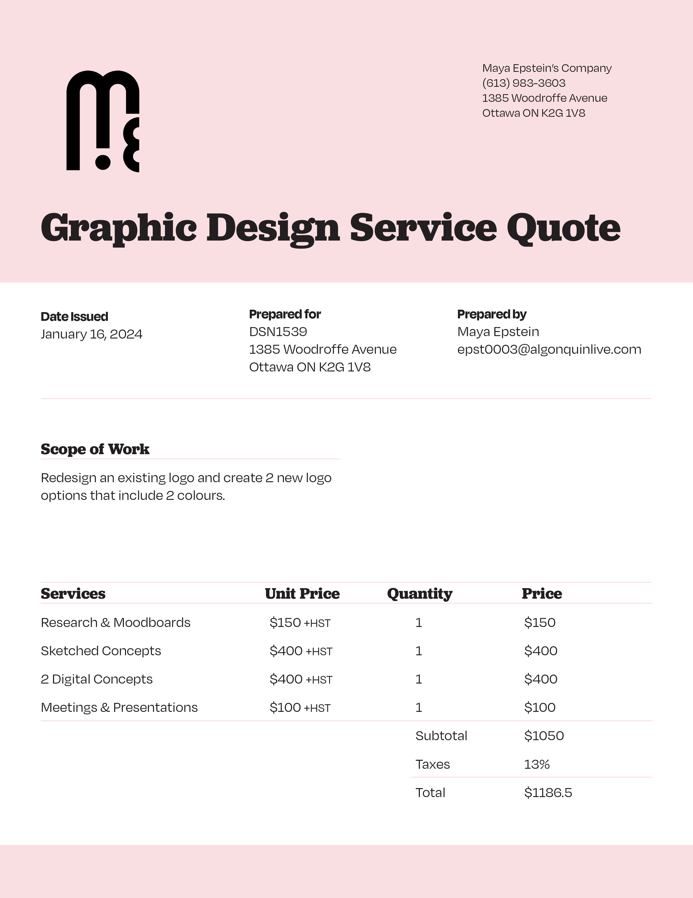